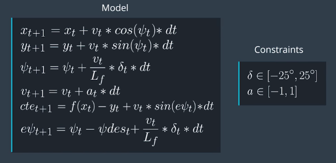
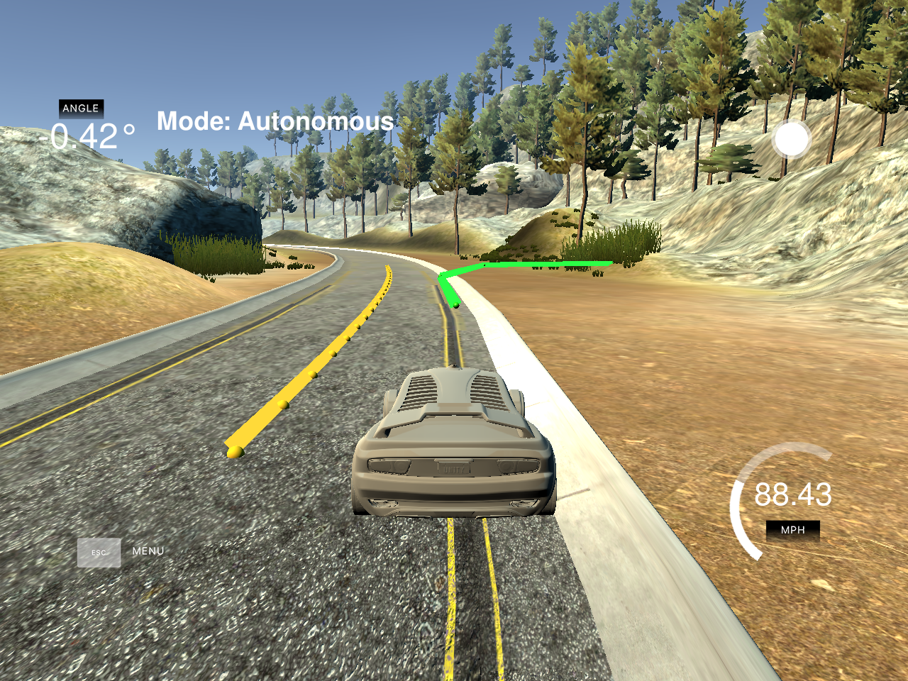

Creig Cavanaugh - July 2017
In this project I implemented a MPC controller to set the steering and throttle values based on the solver solution to optimize the control inputs and minimize cost. My goal was to obtain the highest velocity while still keeping the car safely on the track.
The state model includes the car x and y position, car orientation (psi), acceleration (v), cross-track error (cte), and orientation error (epsi). Since the waypoints are transformed with respect to the car, the values for x, y and psi are set to 0 in the state model (main.cpp line 149).
I used the standard state equations and actuator constraints as defined below. The simulator defines the full steering range as -25 to 25 degrees, and for the acceleration parameter, +1 is full throttle, and -1 is full brake, with 0 neutral.

Figure: From Udacity Self Driving Car Lesson 19: Model Predictive Control
Below are the calculations I use to generate the cost. Note the cte and epsi are weighted heavier than other costs, which reflects their overall importance: ``` for (int t = 0; t < N; t++) { fg[0] += 2000 * CppAD::pow(vars[cte_start + t] - ref_cte, 2); fg[0] += 1500 * CppAD::pow(vars[epsi_start + t] - ref_epsi, 2); fg[0] += 1.5 * CppAD::pow(vars[v_start + t] - ref_v, 2); }
// Minimize the use of actuators. for (int t = 0; t < N - 1; t++) { fg[0] += 5 * CppAD::pow(vars[delta_start + t], 2); fg[0] += 3 * CppAD::pow(vars[a_start + t], 2); }
// Minimize the value gap between sequential actuations. for (int t = 0; t < N - 2; t++) { fg[0] += 300 * CppAD::pow(vars[delta_start + t + 1] - vars[delta_start + t], 2); fg[0] += 5 * CppAD::pow(vars[a_start + t + 1] - vars[a_start + t], 2); }
```
The MPC project also uses the Ipopt tool to optimize the control inputs. Automatic differentiation is accomplished using the CppAD helper library.
The values for N (timestep length) and dt (elapsed duration between timesteps) were chosen empirically through trial and error. I initially tried N=25 and dt=0.05, since these values were used in the lesson quiz. This resulted in the car driving erratically from initial start. It appears the solver cannot calculate all timesteps in quick enough time period to respond to the car's movement.
I then used N=5 and dt=0.10, but when testing the combination with the simulator, it was evident the green model prediction line did not track the yellow waypoint line well, which indicated the model was not generating enough predictions to fit the polynomial properly. Although the car was able to drive around the track, the settings resulted in the car driving either to the far right or left of the centerline, and sometimes running up the curb.
 Figure: Car deviates from centerline with low N value
Finally I settled on N=10 and dt=0.10, which generates enough prediction points in an acceptable amount of time, and predicts a total of 1 second ahead of the car.
I transform the waypoints to use the car as the origin of the coordinate system (i.e. car = 0,0). Since the waypoints are transformed with respect to the car, the values for x, y and psi are set to 0 in the state model (main.cpp line 149).
Artificial latency is built into main.cpp on line 213 to simulate latency that would be present when commanding the car's actuators (steering and throttle). If no action is performed to correct for this, I found the car transitions into a steering oscillation with increasing amplitude which eventually crashes the car. In order to compensate for this latency in MPC, I added 100ms of latency into the x and y calculations of the prediction model in MPC.cpp lines 130-131. This allows the solver to take latency into consideration when determining actuator commands.
Left Figure: Uncorrected latency causes oscillations , Right Figure: 100ms of latency added to prediction model
The controller as implemented safely achieves over 95 mph in some sections of track.
Here's a link to my video result